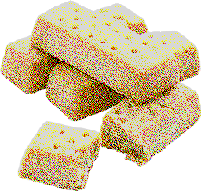

Shortbread
go back

It's very crumbly
ingredients
butter - 100g
sugar - 40
flour - 150g
corn starch - 1 tsp
baking powder - 1/4 tsp
bottom text
directions
mix the ingredients together
place the batter into a greased pan
cook for 40 minutes at 175°C
wait for it to cool
eat!